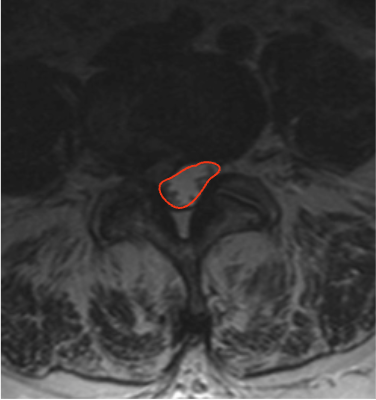

Adapted from: Feger J, Er A, Yap J, et al. Lumbar spine protocol (MRI). Reference article, Radiopaedia.org (Accessed on 01 Jan 2026) https://doi.org/10.53347/rID-147093
1) Description of Measurement
Lumbar spinal canal cross-sectional area (CSA) quantifies the total area available for the cauda equina within the central canal. It is a sensitive morphologic marker for lumbar spinal stenosis and correlates more closely with symptom severity than single-dimension measurements such as AP canal diameter.
CSA incorporates the combined effects of disc bulge, facet hypertrophy, ligamentum flavum thickening, and spondylolisthesis, providing a global assessment of central canal compromise.
2) Instructions to Measure
3) Normal vs. Pathologic Ranges
Key points:
4) Important References
Abel F, Tan ET, Chazen JL, et al. MRI after Lumbar Spine Decompression and Fusion Surgery: Technical Considerations, Expected Findings, and Complications. Radiology. 2023 Jul;308(1):e222732. doi: 10.1148/radiol.222732.
Hansen BB, Nordberg CL, Hansen P, et al. Weight-bearing MRI of the Lumbar Spine: Spinal Stenosis and Spondylolisthesis. Semin Musculoskelet Radiol. 2019 Dec;23(6):621-633. doi: 10.1055/s-0039-1697937.
Genevay S, Atlas SJ. Lumbar spinal stenosis. Best Pract Res Clin Rheumatol. 2010 Apr;24(2):253-65. doi: 10.1016/j.berh.2009.11.001.
5) Other info....
CSA is preferred over AP diameter when:
Should be interpreted with:
Dynamic factors (extension-induced narrowing) are not captured on routine MRI; consider upright or flexion-extension imaging if symptoms and CSA are discordant.